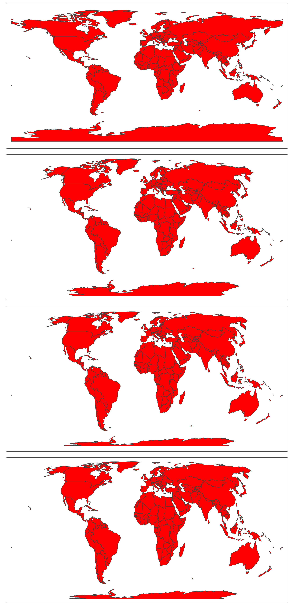
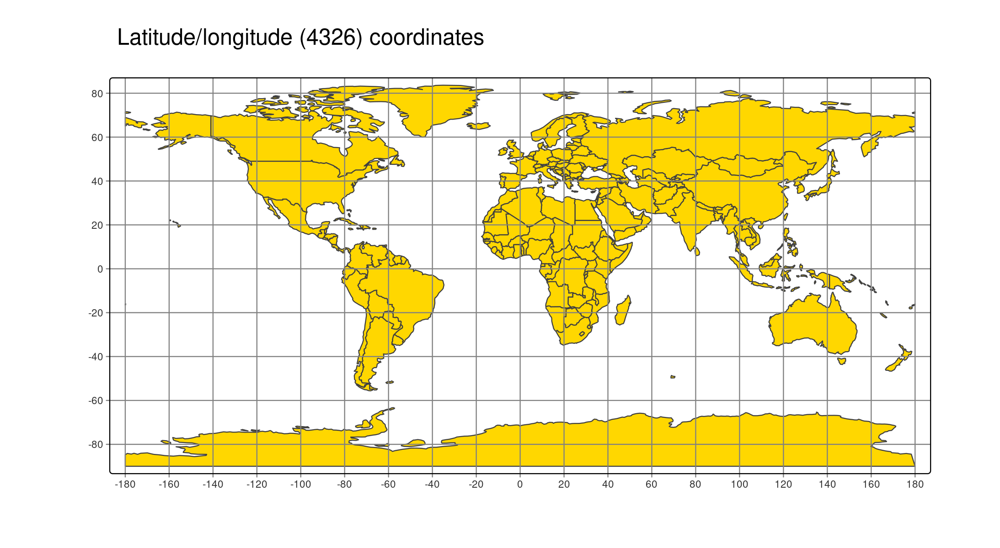
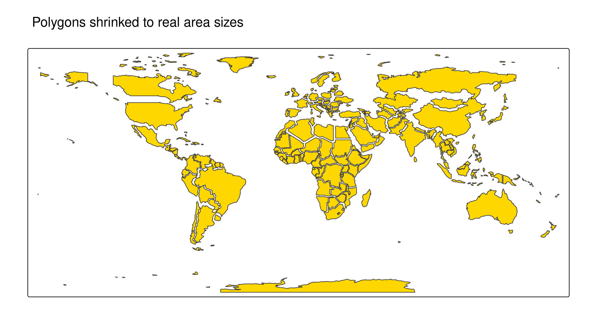
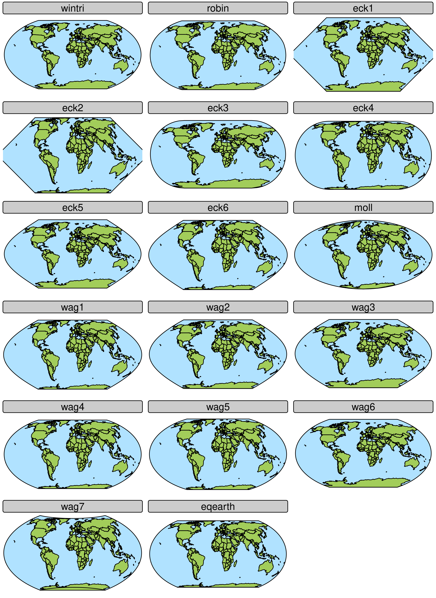
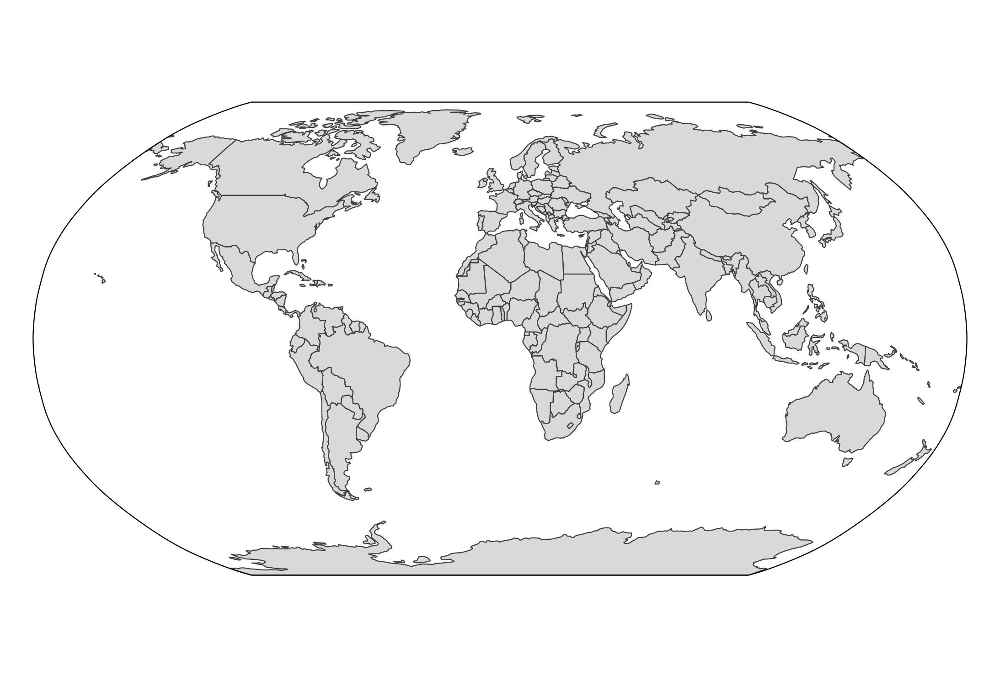
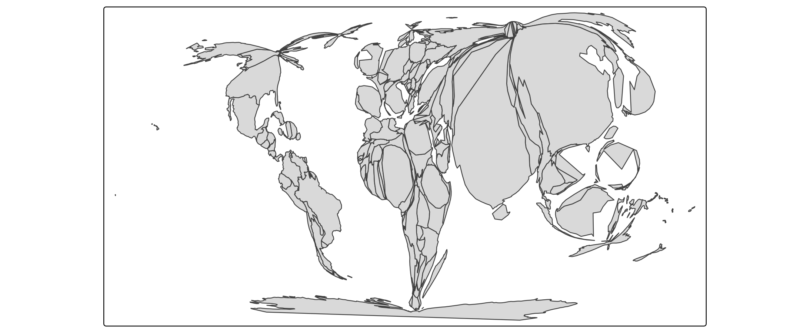
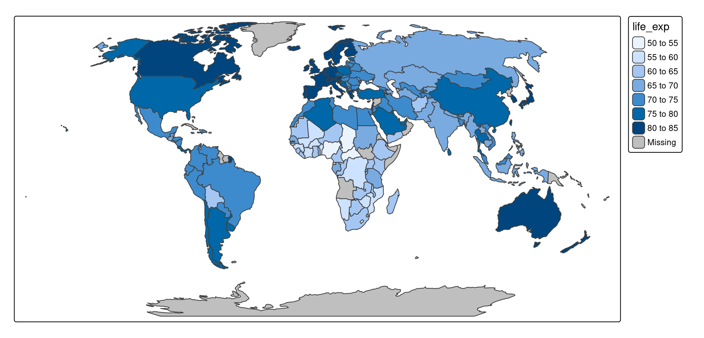

About the data
A spatial data object contained in tmap is called World. It is a data frame with a row for each country. The columns are the following data variables plus an additional geometry column which contains the geometries (see sf package):
names(World)
#> [1] "iso_a3" "name" "sovereignt" "continent" "area"
#> [6] "pop_est" "pop_est_dens" "economy" "income_grp" "gdp_cap_est"
#> [11] "life_exp" "well_being" "footprint" "HPI" "inequality"
#> [16] "gender" "press" "geometry"
tmap_arrange(
tm_shape(World, crs = 4326) + tm_polygons("red"),
tm_shape(World, crs = "+proj=robin") + tm_polygons("red"),
tm_shape(World, crs = "+proj=eqearth") + tm_polygons("red"),
tm_shape(World, crs = "+proj=eck4") + tm_polygons("red"),
ncol = 1
)
CRS
The abbreviation CRS stands for Coordinate Reference System. It defines how real locations on earth are projected on a two-dimensional surface (the plotting device or paper).
Latitude and longitudes define the positions on the earth modeled as a ellipsoid (almost a sphere). Latitudes define north/south (so perpendicular to the equator), whereas longitudes define east/west.
tm_shape(World,
crs = "+proj=ortho +lat_0=20 +lon_0=0",
bbox = sf::st_bbox(c(xmin = -180, xmax = 180, ymin = -90, ymax = 90), crs = 4326)) +
tm_polygons() +
tm_style("natural") +
tm_graticules(n.x = 20, n.y = 10, col = "black", lwd = 2, labels.show = FALSE) +
tm_xlab("Longitudes", size = 1.5) +
tm_ylab("Latitudes", size = 1.5)
In tmap and most other spatial data packages in R (sf, stars, terra) this is named crs (so small case).
Unprojected coordinates: latitude longitude
A CRS that takes the latitude/longitude coordinates as they are, without projection, is called unprojected.
There are a few ellipsoid models of the earth, but the most popular one is WGS84, on which many navigation systems, including GPS, is based.
These latitude/longitude coordinates can be accessed via the EPSG number (which is an identifier for a standard CRS) 4326. The formal definition of this CRS can be obtained via sf::st_crs(4326).
The CRS of the dataset World is also defined as 4326.
tm_shape(World) +
tm_polygons("gold") +
tm_grid(n.x = 16, n.y = 8) +
tm_title("Latitude/longitude (4326) coordinates")
This map may look usable, we do not recommend it for thematic maps, because the further away areas are from the equator, the larger they are plotted:
# calculate inflation number
World$area_lat_lon = World |> sf::st_set_crs(NA) |> sf::st_area()
World$inflation = ((World$area_lat_lon / (360*180)) * 510072000) / units::drop_units(World$area)
tm_shape(World) +
tm_polygons(
fill = "inflation",
fill.scale = tm_scale_intervals(breaks = c(0.4, 0.75, 0.95, 1.25, 3, 4), style = "kmeans", values = "-brewer.rd_yl_bu", midpoint = 1)) +
tm_grid(n.x = 16, n.y = 8) +
tm_title("Plotted areas / real areas")
Projections
For world maps, we recommend to use projections, because area sizes are proportional to real area sizes.
There are a couple of called ‘pseudo cylindrical’ projections, e.g. “Robinson”:
tm_shape(World) +
tm_polygons() +
tm_layout(earth_boundary = TRUE, frame = FALSE) +
tm_crs("+proj=robin")
Transformations
tm_shape(World, crs = "+proj=robin") +
tm_cartogram(size = "pop_est")
#> Cartogram in progress...
tm_shape(World, crs = "+proj=robin") +
tm_cartogram(size = "pop_est") +
tm_basemap(NULL) +
tm_crs("+proj=ortho +lat_0=0 +lon_0=0")
#> Cartogram in progress...